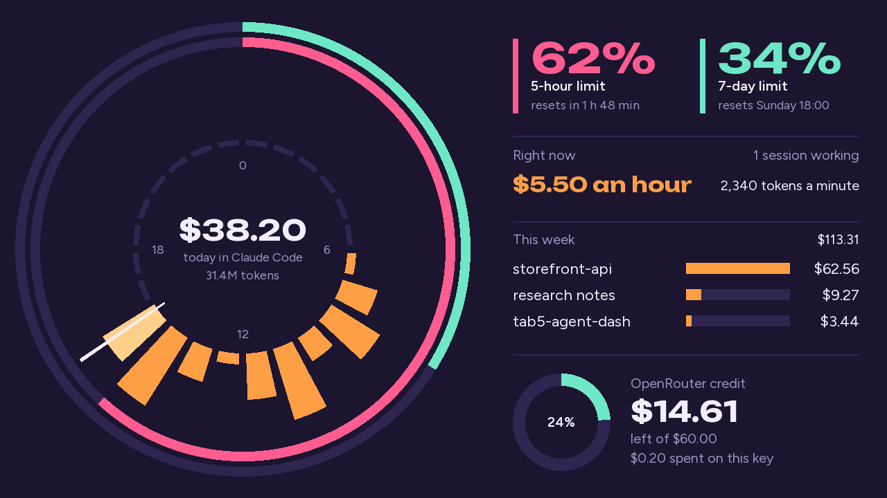
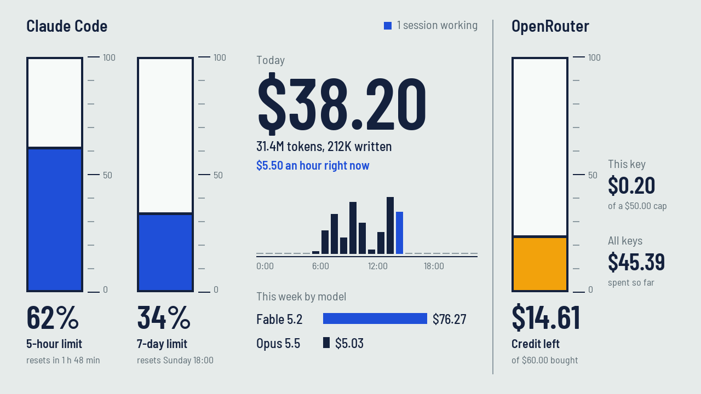

This is a token usage display for the M5Stack Tab5, a 5-inch touchscreen board built on the ESP32-P4. It sits on your desk and shows what your coding agents are costing you: Claude Code and OpenRouter spend today, the 5-hour and 7-day limits, the current burn rate and the credit you have left. It has three themes, written in Python, and you can add your own.


On the device, tap the right third of the screen for the next theme and the left third for the previous one. The picture works the same way.
How it works
The usage data lives on your Mac, so a small collector gathers it there and serves one JSON document. The Tab5 polls it over Wi-Fi every five seconds and redraws only what changed.
Sources on the Mac
Claude Code transcriptsTokens and estimated cost by day, hour, model and project
Claude Code status line5-hour and 7-day limit percentages
OpenRouter APICredit left and spend per key
→
Collector
Python, standard library only. Serves /usage.json on port 8787 and keeps API keys off the device.
→Wi-Fi
Tab5
MicroPython on UIFlow2. One engine handles polling, animation and touch; each theme is a single file.
Costs are estimates at API prices, not subscription charges.
From a prompt to the screen
Nothing talks to Claude Code directly. Claude Code leaves two files behind as you work, and the collector reads them when the Tab5 asks.
You send a prompt, in any folder
Claude Code appends each reply, with its token counts, to a transcript file under ~/.claude/projects. It does this whether or not the dashboard exists.
Claude Code runs the status line command
After each reply, a terminal session hands the command your current 5-hour and 7-day percentages. The command saves them to ~/.cache/tab5-agent-dash/limits.json and prints the line you see at the bottom of the terminal. It never contacts the collector.
The Tab5 asks the collector
Every five seconds the Tab5 requests /usage.json. The collector re-reads any transcript that changed, reads the limits file, asks OpenRouter at most once a minute, and answers.
The screen updates
The engine redraws the regions whose figures changed, so a reply shows on the desk within about five seconds.
Collector stoppedClaude Code keeps writing both files. The Tab5 holds the last figures, says how long it has had no data, and catches up when the collector returns.
No terminal sessionThe limit figures stop refreshing. A limit disappears from the screen once its reset time passes, until a session reports it again.
Mac asleepSame as the collector being stopped. Nothing is lost, because the transcripts are the record.
What counts, by where you work
Where
Tokens and cost
Limit percentages
Claude Code in a terminal
Shown
Shown, refreshed after each reply
Claude Code in the desktop app
Shown. It writes the same transcripts on this Mac
Counted, but refreshed only when a terminal session next reports
Chat in the desktop app, on the web or on a phone
Not shown. Chats leave no transcript on the Mac
Counted, but refreshed only when a terminal session next reports
Claude Code on another computer or in the cloud
Not shown
Counted, but refreshed only when a terminal session next reports
OpenRouter, from anywhere
Shown. Credit and spend come from your OpenRouter account
The limits belong to your Claude account, so everything you do with Claude moves them. The dashboard only learns the new figures from a Claude Code terminal session on this Mac.
Install it on a Tab5
You have a Tab5 and a Mac. You also need a USB-C data cable, uv, and a 2.4 GHz Wi-Fi network that both the Mac and the Tab5 can join. Everything else is downloaded by the commands below.
Get the code
Clone the repository and work from its folder. make on its own lists every command.
git clone https://github.com/AlteredCraft/tab5-agent-dash.git
cd tab5-agent-dash
make
Put MicroPython on the Tab5
Plug the Tab5 into the Mac. This downloads M5Stack's UIFlow2 firmware, checks it, and writes it to the device. It replaces whatever the Tab5 was running, and you only do it once.
make firmware
If the flasher cannot connect, put the Tab5 in download mode as M5Stack's Tab5 page describes, then run it again.
Start the collector on the Mac
Leave this running in its own terminal. The env file holds OPENROUTER_API_KEY; leave ENV out to show Claude Code only.
make serve ENV=path/to/openrouter.env
Install the dashboard
Write a two-line file with your network's WIFI_NAME and WIFI_PASSWORD. This copies the app and its fonts to the Tab5, stores the Wi-Fi details on it in plain text, and restarts it into the dashboard. Figures appear a few seconds later.
make provision WIFI=path/to/wifi.env
Turn on the limits
To show the 5-hour and 7-day limits, add the status line command to the settings file in your home directory, ~/.claude/settings.json. Put it there, not in a project's .claude folder, so it runs for sessions in every folder. Claude Code gives the limit figures only to a status line command.
After a code change, make start updates the Tab5. The collector has no authentication. Anyone on the same network can read your usage figures and project names; make serve HOST=127.0.0.1 keeps it on the Mac.
Everyday commands
Command
What it does
make
Lists every target and variable
make test
Runs the tests, including every theme drawn in every data state
make preview
Draws all themes to PNG on the Mac with sample data
make preview-live
The same, with live data from the running collector
make firmware
Installs UIFlow2 on a Tab5, once per device
make provision WIFI=…
Sets Wi-Fi and the collector address, then starts the dashboard
make start
Copies changed files to the Tab5 and restarts the dashboard
make ports
Shows which serial port is the Tab5
Write a theme
A theme is a module in device/dash/themes/ that divides the screen into regions. Each region has a draw function and a key: the values it depends on. The engine redraws a region only when its key changes, and eases the fields named in ANIMATE toward new values.
Day dial's regions. A new figure for today's cost redraws only the small box in the centre of the dial.
Add the module to themes/__init__.py, run make preview to see it, and make start to put it on the device. The Mac preview runs the same theme code with the same font files, and its text measurements were checked against the device, so what you see in the PNG is the layout you get on the screen.
One fontper animated region. Switching fonts on the device costs about 10 ms each time.
150 pxis the tallest glyph the device draws safely. Larger numerals are stored at half size and doubled.
0.6 sfor a full-screen redraw, so keep animated regions small. Small ones redraw in about 10 ms.